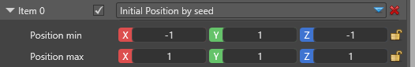
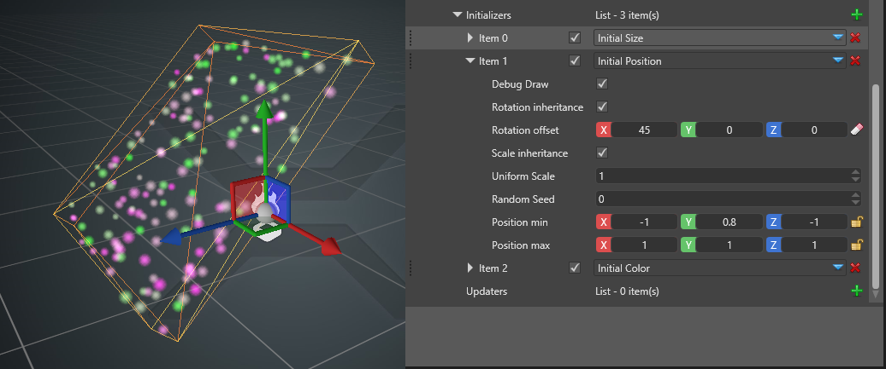
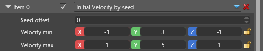
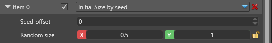
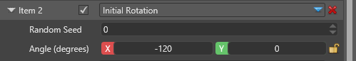
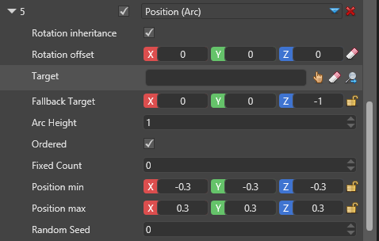

Particle initializers
Intermediate Artist Programmer
Initializers control the states of particles such as position, velocity, size, and so on when the particles are first spawned. They have no effect on particles spawned on previous frames.
Note
Some updaters act change the particle's value at the end of the frame. They effectively overwrite any initial values set by a similar initializer. Such is the case with all animations. They operate on the particle's lifetime and a color animation updater will overwrite any initial values from a color initializer.
Similarly, initializers which operate on the same field are exclusive and only the bottom one will have any effect, since they are executed in order. For example if you assign two color initializer, only the second one will have any effect.]
Common properties
Several properties are common across many initializers.

| Property | Description |
|---|---|
| Debug draw | Draws a debug wireframe in the scene to show the boundaries of the initializer. This is only visible in the Scene Editor, not at runtime. |
| Position inheritance | Inherit the particle system component position, as defined in the particle entity's Transform component |
| Position offset | Additional translation of the module. If it inherits the parent position, this is applied on top of the inherited position. |
| Rotation inheritance | Inherit the particle system component's rotation, as defined in the Transform component |
| Rotation offset | Additional rotation of the module. If it inherits the parent's rotation, this is applied on top of the inherited rotation. |
| Scale inheritance | Inherit the particle system component's uniform scale, as defined in the Transform component |
| Scale offset | Additional scaling of the module. If it inherits the parent's scale, this is applied on top of the inherited scale. |
For example, a velocity initializer can change its direction depending on the parent's rotation or decide to ignore it and always shoot particles in a fixed direction.
On the other hand, size initializers don't change based on the parent's rotation, so the rotation fields won't appear at all.
Position
Particles are spawned in an axis-aligned bounding box, defined by its left lower back corner and its right upper front corner.

| Property | Description |
|---|---|
| Seed offset | Used for random numbers. Set it to the same value to force the position to be coupled with other other particle fields which have three properties (X, Y, Z), eg velocity. Make them different to force the position to be unique and independent from other fields |
| Position min | Left lower back corner for the box |
| Position max | Right upper front corner for the box |
This image shows the bounding box where particles initially appear for this emitter. In addition to the corners (-1, 0.8, -1) ~ (1, 1, 1), the box is further rotated by 45 degrees as seen from the offset rotation.

Velocity
Particles spawn with initial velocity which ranges between the defined values. The velocity is independent in all three directions between X, Y and Z.

| Property | Description |
|---|---|
| Seed offset | This is used for random numbers. Set it to the same value to force the velocity to be coupled with other other particle fields which have 3 properties (x, Y, Z), like position for example. Make them different to force the velocity to be unique and independent from other fields. |
| Velocity min | Left lower back corner for the box |
| Velocity max | Right upper front corner for the box |
Size
Initial size sets the particle's uniform size when it's spawned for the first time. A size of 1 will result in a 1 meter by 1 meter billboard or quad when rendered.

| Property | Description |
|---|---|
| Seed offset | This is used for random numbers. Set it to the same value to force the size to be coupled with other particle fields which have 1 property, like color for example. Make them different to force the size to be unique and independent from other fields |
| Random size | Shows the minimum and maximum size a particle can have at spawn time |
Rotation
Initial rotation sets the particle's angular rotation when facing the camera. Positive values are clockwise rotations. The field only has meaning for camera-facing particles, such as billboards. It has no effect on oriented quads and models.

| Property | Description |
|---|---|
| Seed offset | This is used for random numbers. Set it to the same value to force the angle to be coupled with other particle fields which have 1 property, like color for example. Make them different to force the angle to be unique and independent from other fields |
| Angle (degrees) | The minimum and maximum value, in degrees, for the initial rotation |
Color
Initial color sets the particle's initial color at spawn time. It goes into the vertex buffer when building the particles and can be used by the material, but might not if the option is not set in the material itself. If setting the color has no effect please refer to the Material page for further discussion.

| Property | Description |
|---|---|
| Seed offset | This is used for random numbers. Set it to the same value to force the color to be coupled with other particle fields which have 1 property, like size for example. Make them different to force the color to be unique and independent from other fields |
| Color A | The first value, in hexadecimal code. The color will be a random tint between this and the second color. |
| Color B | The second value, in hexadecimal code. The color will be a random tint between this and the first color. |
3D Orientation
Initial 3D orientation sets the orientation for 3D-aware particles when they first spawn. The editable fields use euclidean rotation which is packed into a quaternion orientation by the engine. The interpolated value is on the shortest path between the two orientations, rather than interpolating each value separately.

| Property | Description |
|---|---|
| Seed offset | This is used for random numbers. Set it to the same value to force the orientation to be coupled with other particle fields which have 1 property, like size for example. Make them different to force the orientation to be unique and independent from other fields. |
| Orientation A | The first oriented position |
| Orientation B | The second oriented position |
Direction
This initializer creates the Direction field in the particle properties and sets its initial value. Some shape builders, like the Trail shape or the Direction Aligned Sprite shape use the particle's direction to properly display it.
| Property | Description |
|---|---|
| Seed offset | This is used for random numbers. Set it to the same value to force the direction to be coupled with other other particle fields which have 3 properties (x, Y, Z), like position for example. Make them different to force the velocity to be unique and independent from other fields. |
| Direction min | Left lower back corner for the box |
| Direction max | Right upper front corner for the box |
Spawn Order
This initializer has no properties. It simply sets an increasing number to each particle spawned from this emitter, starting from 0. The spawn order can be used for sorting or some custom calculations.
Position (Arc)
The arc position initializer positions the particles in an arc (or a straight line if the arc's height is 0) between two point, the emitter's position and a target transform component. With random position offset you can cause the particles to deviate a little from their original location on the arc.

| Property | Description |
|---|---|
| Seed offset | This is used for random numbers. Set it to the same value to force the position to be coupled with other other particle fields which have 3 properties (X, Y, Z), like velocity for example. Make them different to force the position to be unique and independent from other fields. |
| Position min | Left lower back corner for the box |
| Position max | Right upper front corner for the box |
| Target | Allows you to pick up an Entity for the end of the arc. If no Entity is set, Fallback Target will be used, which is an offset from the emitter's location. |
| Fallback Target | Offset from the emitter's location used as the end point in case Target is not set |
| Arc Height | The height of the arc at its highest point (middle of the distance between the two points). By default it's the Y-up vector, but can be rotated with rotation offset and rotation inheritance |
| Ordered | If checked, new particles will appear in order from the emitter towards the target. If unchecked, new particles will appear randomly on the arc anywhere between the emitter and the target. If you plan to visualize the particles as a ribbon or a trail you should set this box to checked. |
| Fixed count | By default particles will appear on the arc at distances enough for the maximum number of particles to fit exactly on the line. If you want to control spawn rate and distance, you can set how many fixed "positions" are there on the arc. For example, with a fixed count of 10 and Ordered spawning, the first 10 particles will appear in order, then the 11th particle will appear from the beginning, at the same position as the first, and so on. |
| Seed offset | This is used for random numbers. Set it to the same value to force the position to be coupled with other other particle fields which have 3 properties (X, Y, Z), like velocity for example. Make them different to force the position to be unique and independent from other fields. |
| Position min | Left lower back corner for the box. This is an offset in addition to the arc position. |
| Position max | Right upper front corner for the box. This is an offset in addition to the arc position. |
Position (parent)
| Property | Description |
|---|---|
| Seed offset | This is used for random numbers. Set it to the same value to force the position to be coupled with other other particle fields which have 3 properties (X, Y, Z), like velocity for example. Make them different to force the position to be unique and independent from other fields. |
| Position min | Left lower back corner for the box |
| Position max | Right upper front corner for the box |
| Parent emitter | You have to type the name of the parent emitter. Child particles' positions will match the parent emitter's particles' positions. |
| Parent Offset | Random seed used to couple or decouple the way a parent particle is chosen. For example, if you want to pick position and color from seemingly random particles, you can use the same offset. If you want to avoid such connection, you can use different offsets for position and color initializers. |
| Spawn Control Group | When None, parents will be picked randomly. When set to one of the four groups, only particles from a specific parent will be initialized. It should match a control group from the Spawn from Parent spawner to work properly. |
Velocity (parent)
| Property | Description |
|---|---|
| Seed offset | This is used for random numbers. Set it to the same value to force the velocity to be coupled with other other particle fields which have 3 properties (x, Y, Z), like position for example. Make them different to force the velocity to be unique and independent from other fields. |
| Velocity min | Left lower back corner for the box |
| Velocity max | Right upper front corner for the box |
| Parent emitter | You have to type the name of the parent emitter. Child particles' positions will match the parent emitter's particles' positions. |
| Parent Offset | Random seed used to couple or decouple the way a parent particle is chosen. For example, if you want to pick position and color from seemingly random particles, you can use the same offset. If you want to avoid such connection, you can use different offsets for position and color initializers. |
| Spawn Control Group | When None, parents will be picked randomly. When set to one of the four groups, only particles from a specific parent will be initialized. It should match a control group from the Spawn from Parent spawner to work properly. |
Size (parent)
| Property | Description |
|---|---|
| Seed offset | This is used for random numbers. Set it to the same value to force the size to be coupled with other particle fields which have 1 property, like color for example. Make them different to force the size to be unique and independent from other fields. |
| Random size | Shows the minimum and maximum size a particle can have at spawn time |
| Parent emitter | You have to type the name of the parent emitter. Child particles' positions will match the parent emitter's particles' positions. |
| Parent Offset | Random seed used to couple or decouple the way a parent particle is chosen. For example, if you want to pick position and color from seemingly random particles, you can use the same offset. If you want to avoid such connection, you can use different offsets for position and color initializers. |
| Spawn Control Group | When None, parents will be picked randomly. When set to one of the four groups, only particles from a specific parent will be initialized. It should match a control group from the Spawn from Parent spawner to work properly. |
Color (parent)
| Property | Description |
|---|---|
| Seed offset | This is used for random numbers. Set it to the same value to force the color to be coupled with other particle fields which have 1 property, like size for example. Make them different to force the color to be unique and independent from other fields. |
| Color A | The first value, in hexadecimal code. The color will be a random tint between this and the second color. |
| Color B | The second value, in hexadecimal code. The color will be a random tint between this and the first color. |
| Parent emitter | You have to type the name of the parent emitter. Child particles' positions will match the parent emitter's particles' positions. |
| Parent Offset | Random seed used to couple or decouple the way a parent particle is chosen. For example, if you want to pick position and color from seemingly random particles, you can use the same offset. If you want to avoid such connection, you can use different offsets for position and color initializers. |
| Spawn Control Group | When None, parents will be picked randomly. When set to one of the four groups, only particles from a specific parent will be initialized. It should match a control group from the Spawn from Parent spawner to work properly. |
Spawn Order (parent)
This initializer requires the parent emitter to also have a Spawn Order initializer. It combines the parent's spawn number with its own, effectively creating groups of particles among the children. This initializer is required to properly sort and render child ribbon particles.
| Property | Description |
|---|---|
| Parent emitter | You have to type the name of the parent emitter. Child particles' positions will match the parent emitter's particles' positions. |
| Parent Offset | Random seed used to couple or decouple the way a parent particle is chosen. For example, if you want to pick position and color from seemingly random particles, you can use the same offset. If you want to avoid such connection, you can use different offsets for position and color initializers. |
| Spawn Control Group | When None, parents will be picked randomly. When set to one of the four groups, only particles from a specific parent will be initialized. It should match a control group from the Spawn from Parent spawner to work properly. |